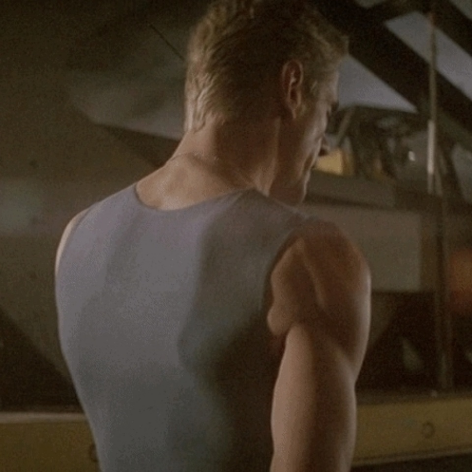

Snow

178/65
스노우라는 이명처럼 하얀 머리카락을 가지고 있다. 짧게 잘라서 옆으로 넘겨 그럭저럭 단정하게 유지하고 있다.
옅은 회청색 눈동자. 빛이 과하게 비추는 날엔 하얀색처럼 보이기도 한다.
사람의 귀, 설표의 귀를 둘 다 가지고 있으며, 제 키보다 살짝 짧은 설표 꼬리를 가지고 있다.
키가 조금 작지만 비율이 좋고, 근육량이 많다.
본부에서는 늘 쓰리피스 정장을 깔끔하게 챙겨 입고 있다. 
기본적으로 만사 귀찮은 얼굴을 하고 있다.

Name

스노우 Snow

Age

39

Gender

남성

Thought

과격파

Psychic

눈표범 수인화
능력 사용시 체력, 균형 감각, 힘, 동체 시력, 후각 능력 등 신체 능력이 눈표범 급으로 상향된다.
외형적으로는 눈표범의 귀와 꼬리가 나타나고 머리카락에 눈표범의 무늬가 떠오른다.
다만, 사용 시간이 길어질수록 잔상처럼 눈표범의 형상이 몸에 조금씩 남는다.
눈표범의 형상이 완전히 몸을 뒤덮는 순간에 죽게 된다.
현재 스노우는 귀와 꼬리가 사라지지 않으며, 프루스텐*을 할 수 있다.

(*프루스텐 : 호랑이와 눈표범이 상대방에게 적의가 없다는 것을 나타내기 위한 콧소리)

Character

평소에 겉으로는 나른한듯 느긋한 편이다. 허나 속에서는 온갖 것이 휘몰아치는 듯.
또한 말은 별로 많이 안 하지만 잘 웃는다. 농담인지 진담인지 알 수 없는 독특한 말을 많이 한다.
본인에 대한 자존감, 자존심이 제법 높은 편이라 꺽이는 것을 견디지 못 한다.
승부욕이 없어 보이는데 지는 것은 물론이고 단순하게 실패하거나 실수하는 것조차 견디지 못 한다. 
모든 일이 규칙 아래에서 똑바로 굴러가야 한다고 생각하지만 자신의 뜻을 이루기 위해 정도에서 뛰쳐나가는 짓도 자주한다.


Other

러시아계 미국인. 하지만 영국에서 컸다.
현재는 미국과 영국을 오고가면서 지낸다.
뉴욕과 런던에 집이 한 채씩 있다. 
돌아다니는 걸 좋아한다. 

가족 관계는 히어로셨던 부모님
양친 모두 눈표범 수인화 능력자셨으나 아버지는 능력 사용시에만 눈표범의 모습이 나타났고 어머니는 늘 귀와 꼬리를 가지고 계시고 머리카락에도 표범 무늬가 착색된 형태였다. 두 분 다 패널티는 비슷하게 적용되었다.
아버지는 윈터
어머니는 알파
두 분 모두 임무 수행 중 사망.

부모님 사망 이후로 과격파로 어머니와 뜻을 같이 하던 로잘린드에게 맡겨져 영국에서 살았다.
얼마 안 있어 로잘린드가 클로버를 데리고 와서 같이 자랐다. 

능력 자체는 신체 능력을 올려줄 뿐이기 때문에 제대로 활용하기 위해서 다양한 무술을 배웠다. 권투, 태권도, 주짓수, 이종격투기 뿐만 아니라 군대에서 사용하는 특공무술과 검도 펜싱 사격 등도 배웠다. 현재는 직접 뛰는 일이 많지 않음에도 불구하고 매일 같이 체력 단련을 하고 있다. 

메인쿤과 노르웨이숲, 스노우 벵갈을 한 마리씩 기르고 있다. 
이름은 순서대로 M N S 다.
나이는 S가 가장 많고 그 다음에 N, M이 가장 어리다.

결혼을 한 번 시도한 적이 있다.
위장계열 능력을 가진 능력자로 함께 히어로 활동을 하던 중 마음이 맞아서 결혼까지 하게 되었다. 
하지만 결혼 후 얼마 안 되어 임무 중 사망했다. 
이름은 막스.

바이 섹슈얼이다.
오는 사람 안 막고 가는 사람도 안 막는 연애를 하고 있다. 

어머니와 아버지 그리고 키워준 로잘린드 또한 과격파 사상으로 가르쳐서 어릴 때부터 과격파 사이에서 유명했다.
과격파의 리더가 되는 것이 거의 당연한 수순처럼 느껴질 정도로.
고등학생 때 IPHU에서 인턴 활동을 시작하면서부터 과격파의 주축 세력이 되었다.
다만 로잘린드가 온건파로 넘어갔을 때 아직 젊었기 때문에 한 세대 리더를 거쳤다. 즉 리더가 된지는 얼마 안 된 상태. 그렇다고 엄청나게 잘 해야겠다고 생각해서 무리하진 않는다. 내가 잘 하겠지 뭐 하는 생각을 하는 중. 
IPHU 과격파 사이에서 알만한 사람들은 다 아는 사람이라 사생활이 없다고 싫어하고 있다. 

가장 좋아하는 음식은 고기. 고기다. 
고기는 진리라고 말하고 다니며 고기만 먹는다.
IPHU 의사들이 아주 질색팔색한다.
눈표범 수인화 능력자이지 눈표범이 아니라고 말하면서 야채를 먹이려고 쫓아다니지만 눈표범 수인화를 써서라도 도망간다.

리더가 자길 과격파로 키워놓고 지금은 온건파로 넘어갔다고 배신감을 느끼고 있다.

자주 꼬리를 물고 있다.
추우면 당연히 물고 있지만 안 추워도 심심하면 물고 있다. 처음에는 그냥 자신의 길고 예쁜 꼬리를 자랑하려는 심산이었는데 점차 가면서 불안할 때 버릇이 되었다.


With

마담 클로버.
로잘린드 밑에서 함께 컸다.
말로 이길 수가 없어서 짜증난다. 말로 못 이긴다고 주먹다짐을 할 수도 없는 노릇이고.


----------------------------------------------------------------------------------

Behind Story

 - 본명은 아나톨리 바실리예비치 드미도프 Anatoly Vasilievich Demidov . 애칭은 톨랴 Tolya, 아나톨카 Anatol'ka
아버지는 바실리 발레리예비치 드미도프 Vasili Valeryevich Demidov . 애칭은 바샤 Vasya, 바실카 Vasil'ka
어머니는 올가 니콜라예브나 Olga Nikolaevna Demidov. 애칭은 올랴 Olya, 올류카 Olhukha
어렸을 때는 부모님이 아나톨카라고 많이 불러주었다.
부모님의 사망 이후로 아나톨리라고만 불렸는데, 어느 날 클로버가 러시아식 이름에 대해 뭘 배우고 왔는지 자신을 톨랴라고 부르기 시작해서 어쩐지 스트레스를 받고 있다.

-생일은 12월 5일

- 아버지와 어머니 모두 전장에서 사망하셨다고 하지만 사실 조금 틀리다.
아버지는 전장에서 사망하신 게 사실이지만, 어머니의 경우 현재 리더인 로잘린드의 도움으로 집에 돌아왔다.
하지만 전투에서 입은 상처로 오래 살기 힘든 상황이었고 눈표범화가 거의 끝난 상태였다. 
결국 올가는 로잘린드에게 스노우를 맡기고 그의 앞에서 사망했다.
스노우는 이 때의 일로 자신 또한 그런 식으로 죽을 것이란 사실에 공포를 가지고 있다.
다만 자신이 그런 공포를 가지고 있단 사실을 로잘린드에게도 밝힌 적은 없다. 

-능력 특성상 현장에서 어마무지하게 많이 굴렀다.
주로 설산 지대, 산악 지대, 설원 지대에서 선발대로 들어가서 큰 공을 세웠다. 이 뿐만 아니라 사막이나 고원, 정글 같이 오지와 험준한 곳에서도 서포터로서도 큰 활약을 해왔다.
투입된 임무가 많은 만큼 크고 작은 실패 경험이 많고 그만큼 잃은 사람들 또한 많아서 이에 대한 상처와 두려움이 깊숙이 존재하고 있다. 조그마한 실수나 부족, 우유부단한 결정이 큰 손해가 된다는 사실을 잘 알고 있고, 길을 벗어난 이들의 능력이나 범죄가 어떤 식으로 민간인들에게 피해를 주는지 봐 왔기 때문에 더더욱 강해져야 하며 범죄를 저지른 이들에 대한 처벌을 강화해야 생각한다. 
과격파로 컸지만 점점 더 과격파로 치우쳐 가는데에는 이런 경험들이 크게 작용하고 있다. 또한 클로버를 주축으로 한 온건파의 사상이 유약한 탁상공론에 불과하다고 생각하고 있으며 클로버가 리더 자리에 올라서 온건파가 득세하면 범죄를 제대로 막지 못 하고 민간인의 피해와 히어로의 사망이 늘어날 것이라고 생각하고 있다.

-과격파라고 하지만 온건파를 싫어하진 않는다.
그저 히어로에 어울리지 않는다고 생각할 뿐이다.
